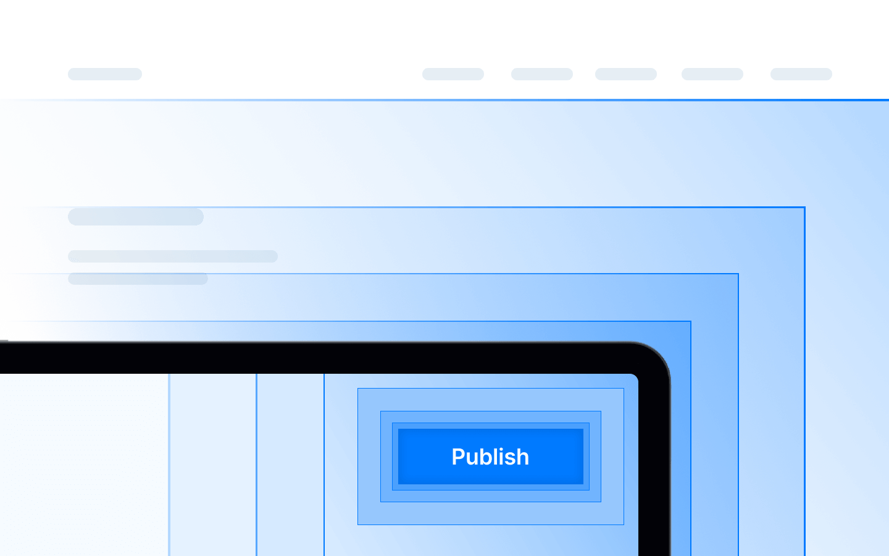

HOW WE WORK
We work closely with our customers to design financial products and institutions from idea to execution. We help customers with product specifications, technology architecture, testing and deployment. We continue working with our customers after launch to continue innovating.
A proven, structured delivery process that takes you from concept to live product with confidence.
Our teams of specialists in all aspects of financial technology work together with our customers to understand the goals to be achieved by offering financial products and help design a strategy and project roadmap.

We adapt to our client's required project type and business context.
Spin off or create a new fintech arm for your business from scratch. Leverage existing assets or start anew with an entirely new company. Our team of experts will work hand in hand with our customer from idea to deployment and beyond.
Upgrade your software stack as needed with our different modules, and use them as building blocks to create modern financial products without affecting existing customers. Start mirroring current systems and turn them off once it's ready.